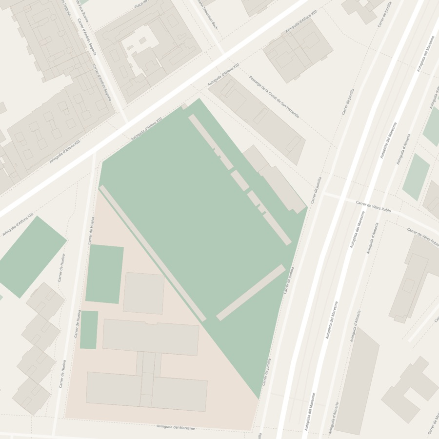
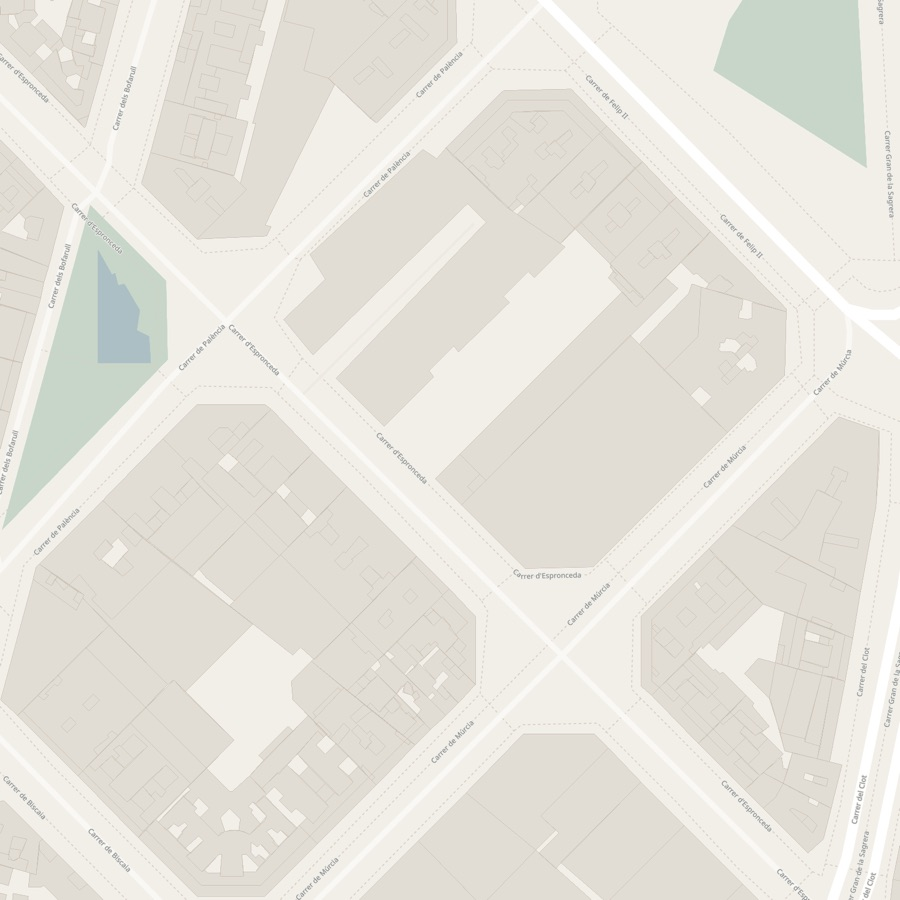
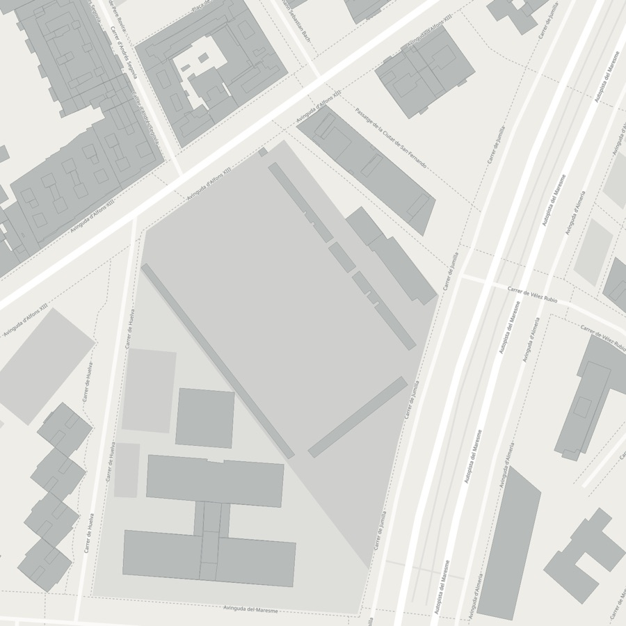
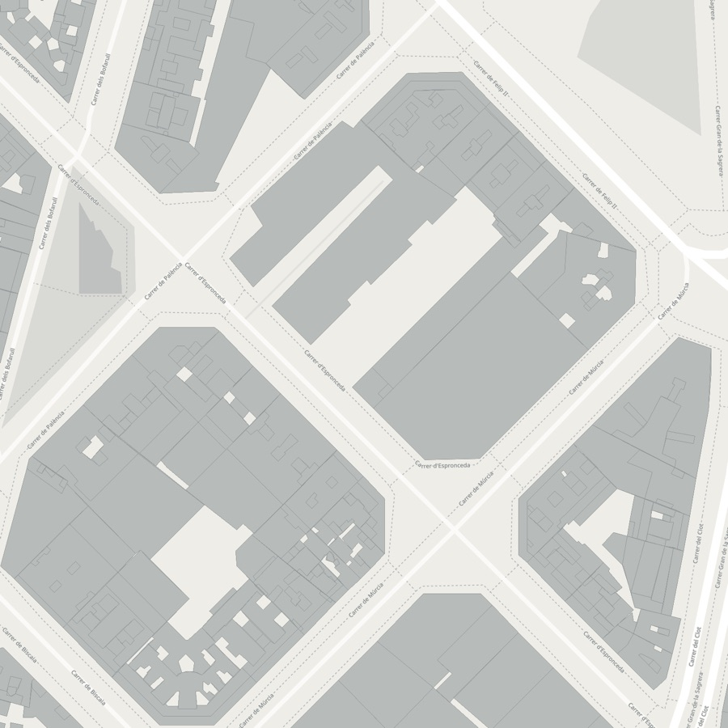
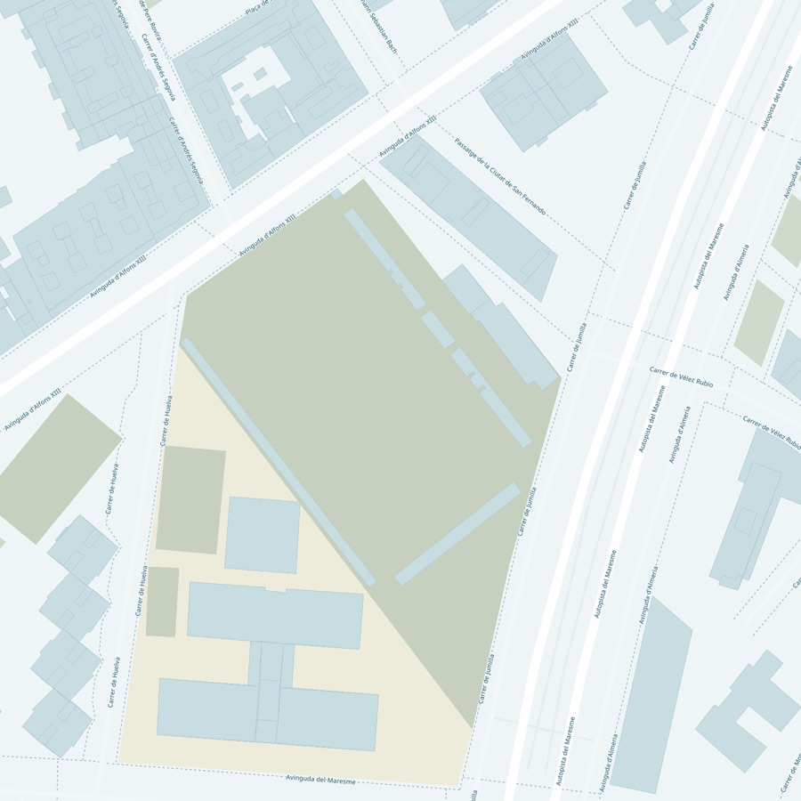
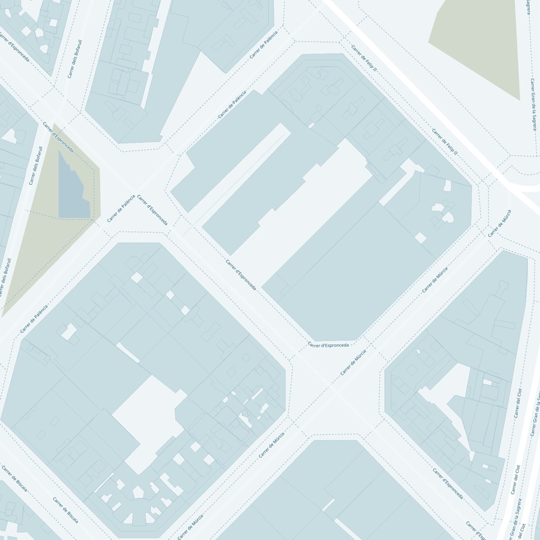

Tres paletas nuevas, solo para /acceso/. Más claras
y, sobre todo, con muchas más capas: contorno de edificio, sendas y escaleras,
viales de aparcamiento, ferrocarril, y el suelo diferenciado por uso en vez de
un solo verde. Con nombres de calle, que en un hero eran ruido y aquí son
la respuesta a la pregunta que hace la página.
La capa dibujada encima es la que ya está en
_data/venues.yml, con sus porcentajes actuales, para que se
puedan juzgar los colores del resaltado contra cada fondo — y para que se
vea cuánto queda por recalibrar. El ocre de ahora se eligió contra una ortofoto
oscura y sobre estos fondos no se vería, así que cada paleta trae los suyos.
紙
plan-papelFondo casi blanco, edificios en gris cálido con su contorno, agua en Vandar Poel's Blue y verde en Diamine Green rebajado. Es la guía de ciudad impresa: el que más se parece a un plano que te dan en un mostrador.


Paleta
Resaltado
#AE5224#7A8C5A#82241F淡墨
plan-suibokuUn solo tono sobre marfil: los edificios oscuros con contorno, las calles en blanco y todo lo demás en grises de Slate Color. Sin color propio, así que el resaltado del dojo y las puertas es lo único que tiene color en la imagen.


Paleta
Resaltado
#82241F#7B8587#82241F淡碧
plan-glaucoConstruido desde Light Glaucous Blue: fondo frío muy claro, agua en el azul del diccionario y verdes en Greenish Glaucous. El más luminoso de los tres y el que mejor separa el agua del suelo, que en Barcelona y Sant Adrià importa.


Paleta
Resaltado
#82241F#16633A#AE5224